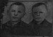

Monday, March the 8th, 2004
back to: title, date or indexes
A number of readers, enamoured of the thrilling adventures of Istvan and Zoltan chronicled here over the past week or so, have asked if any pictures exist of the duo. Long hours rooting and rummaging in the Hooting Yard Photographic Library, (to be found on the mezzanine floor of the Big Damp Building pitched so perplexingly on the lethal slopes of Pang Hill), eventually brought to light one of the notorious “ghost photographs” taken by Dobson. According to a scribbled note on the back, this may be the only pictorial record of the twins.
